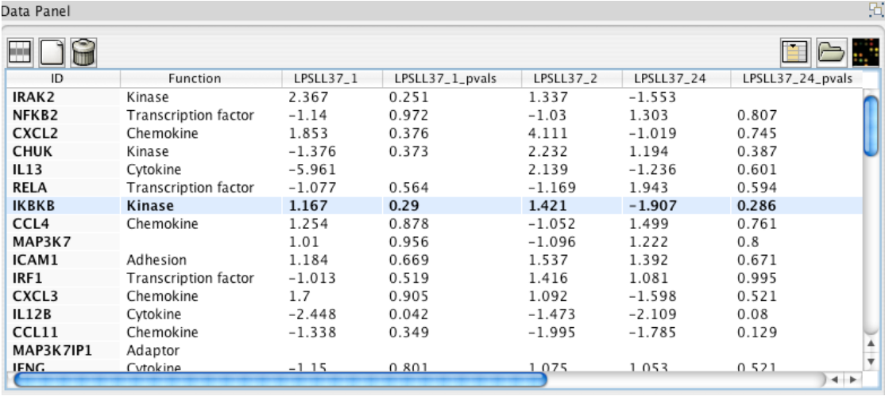
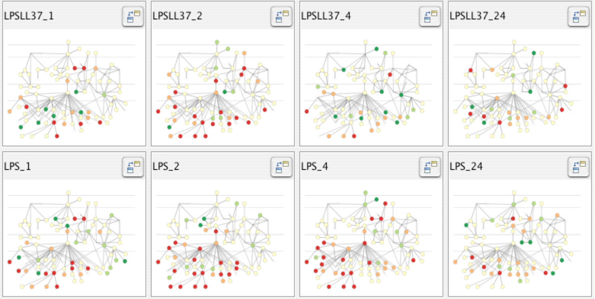

ISIS 4822 : Visual Analytics
John Alexis Guerra Gómez| ja.guerrag[at]uniandes.edu.co| @duto_guerra
Jose Tiberio Hernandez | jhernand[at]uniandes.edu.co
Universidad de los Andes
http://johnguerra.co/classes/apo1_fall2016/lv1_c1_algoritmia
Syllabus
Book
Visualization Analysis and Design, Tamara Munzner

Projects & Homeworks
- Design critique
- Individual mid class project
- Group final project (3 people), 25% of the grade
Introduction
Definitions
Defining Visualization (vis)
Computer-based visualization systems provide visual representations of datasets designed to help people carry out tasks more effectively.
Why?
Have the human in the loop
Visualization is suitable when there is a need to augment human capabilities rather than replace people with computational decision-making methods.
When don't use vis?
Don’t need vis when fully automatic solution exists and is trusted
But
- Many analysis problems are ill-specified
- Don’t know exactly what questions to ask in advance
Vis allows for
- Long-term use for end users (e.g. exploratory analysis of scientific data)
- Presentation of known results
- Stepping stone to better understanding of requirements before developing models
- Help developers of automatic solution refine/debug, determine parameters
- Help end users of automatic solutions verify, build trust
Computer-based visualization systems provide visual representations of datasets designed to help people carry out tasks more effectively.
External representation: replace cognition with perception
[Cerebral: Visualizing Multiple Experimental Conditions on a Graph with Biological Context. Barsky, Munzner, Gardy, and Kincaid. IEEE TVCG (Proc. InfoVis) 14(6):1253-1260, 2008.]